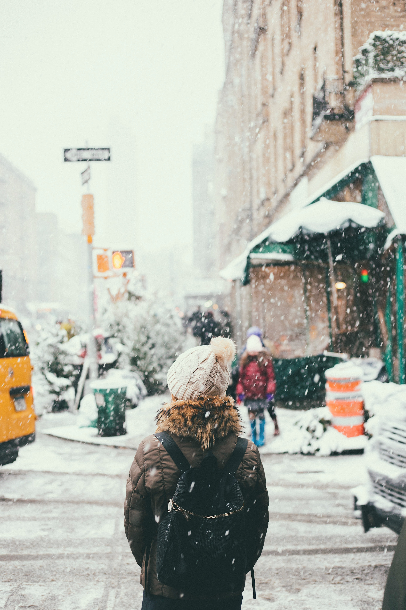

Spring
Hello Spring! You add so much life and beauty to this world. Blossom by blossom, sunray by sunray nature awakens.
Easter Break
Easter is the only time it's okay to put all eggs in one basket. Enjoy the time with your family. Find some inspirations of what you could do:
- Painting Easter Eggs
- Baking Easter Braids
- Play Hide and Seek
- Active Egg Hunt
- Get Creative
Enjoying Spring
Take a walk outside, smell the wild, fresh air, watch the flowers bloom.
Summer
Summertime! Live in the sunshine. Swim in the sea. Smell the salty air. Let the warm sun wrap around you.

Autumn

Welcome the season of coloured trees. Autumn is for early sunsets, hot tea, messy hair and big, warm sweaters.Things to do during fall:
- Take a walk in the forest and enjoy the warm colours
- Carve pumpkins
- Drink warm tea and talk to your loved ones
- Get ready for scary halloween
Winter
Winter time is arriving slowly. It is getting colder and when the first frosty air is smelled snow is not far. During winter there are a lot of fun activies such as sledging, skiing, snowball fights or building a snowman. When your freezing a hot chocolate by the fire will warm you up again.
